Fluid Pan: Service and Repair
Valve housing coverTo remove
1. Add the wing cover. Set gear position P and apply the handbrake. Raise the car. If a track lift is used the wheels must be blocked. Remove the front spoiler shield.
CV: Remove Chassis reinforcement, front subframe, CV
2. Position a container under the car, connect a hose and drain the cooling system.
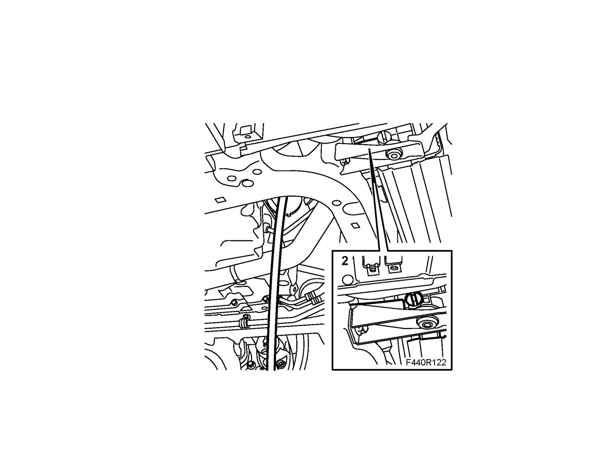
3. Drain the gearbox oil via the bottom plug. Fit the plug with a new seal. Use protective gloves.
Tightening torque 45 Nm (33 lbf ft)
Warning
The oil can be very hot if the car was recently driven. Risk of burn injuries.
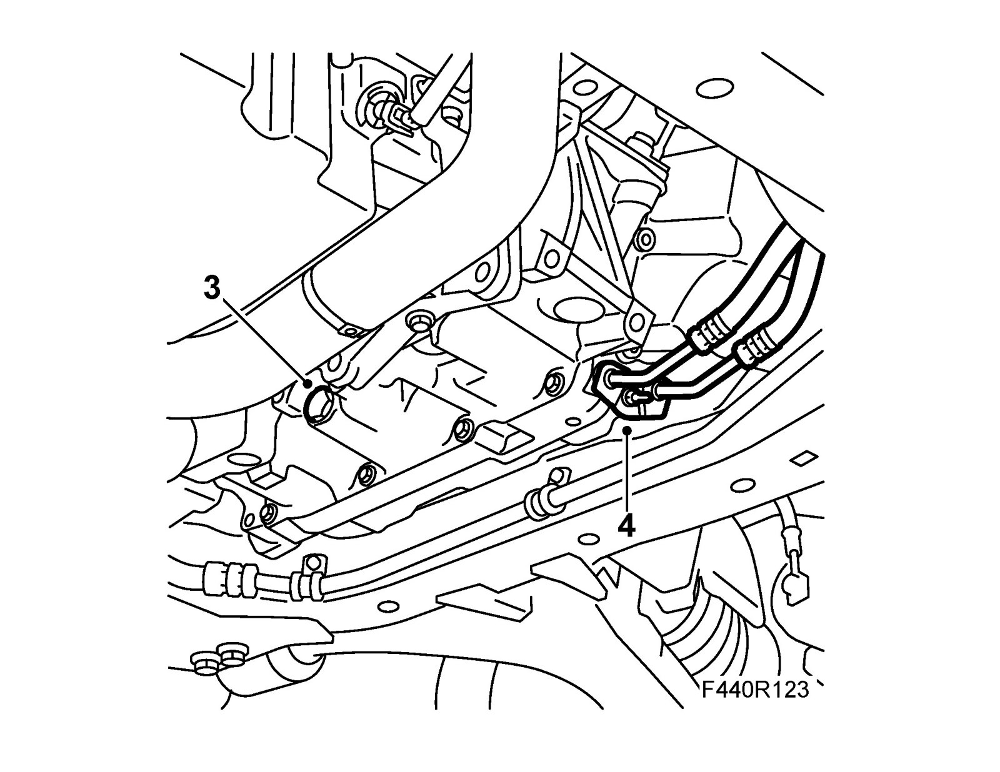
4. Remove the oil cooler hose connections from the gearbox. Plug the connections.
5. Remove the charge air pipe lower junction hose and move it aside. Remove the charge air pipe lower retaining bolt.
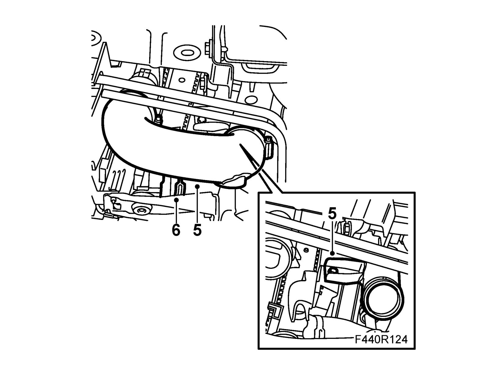
6. Remove the lower coolant hose clamp and move it aside.
7. Lower the car to the floor.
8. Remove Battery and Battery cover, lower section.
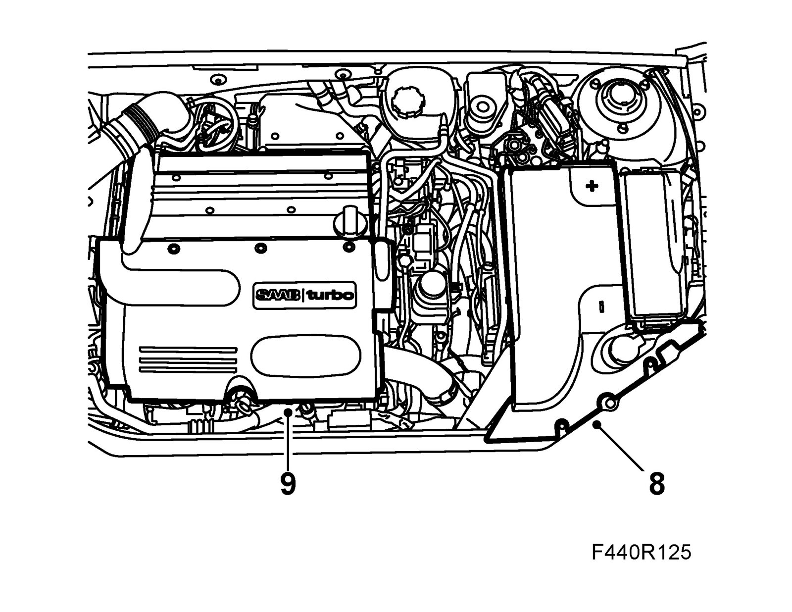
9. Remove the upper engine cover.
10. Remove the charge air pipe vacuum hose and the sensor connector.
11. Remove the charge air pipe.
12. Remove the dust protector from the upper pipe, turn 87 92 806 Removal tool, oil pipe, automatic transmission slightly and detach the upper connection. Undo the pipe from the clip at the same time. Have a rag ready to catch any oil spill.
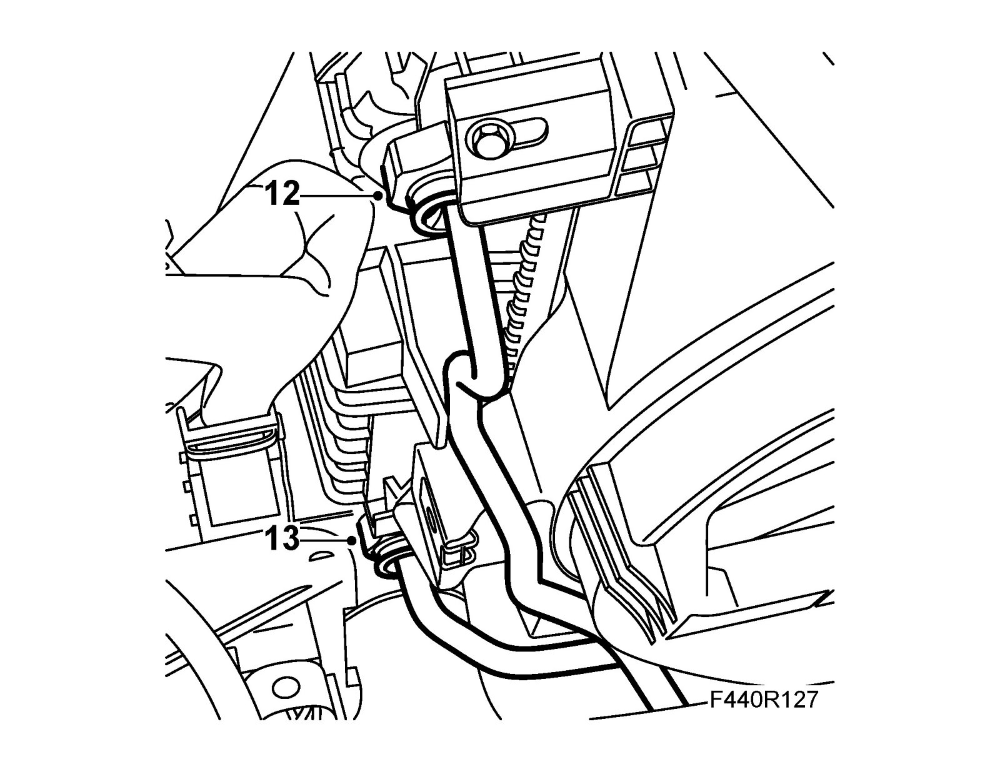
13. Remove the dust protector to the lower pipe from the oil cooler. Use 87 92 806 Removal tool, oil pipe, automatic transmission in accordance with the above.
14. Detach the bracket to the engine wiring harness on the left-hand side of the body.
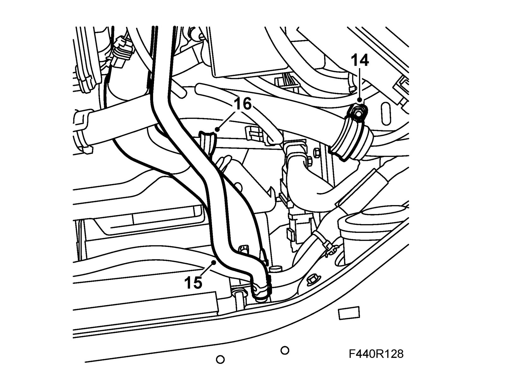
15. Remove the air exhaust hose on the radiator and move it aside.
16. Remove the servo pipe clamp from the subframe.
17. Remove the bolts to the valve housing cover.
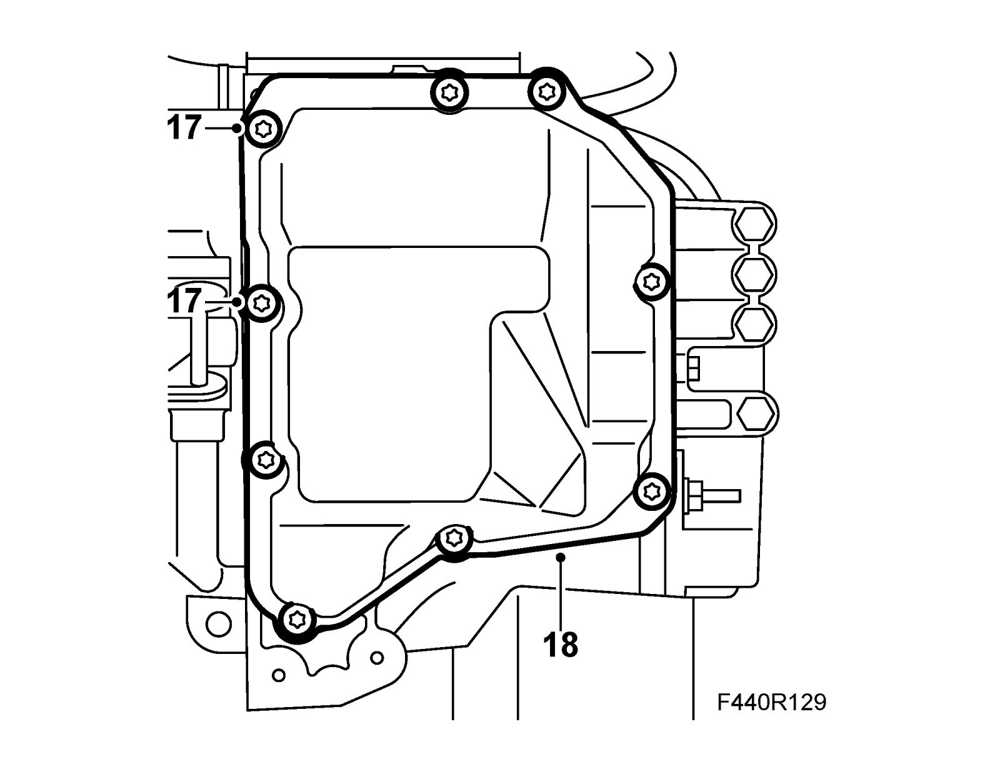
18. Remove the cover using a screwdriver.
To fit
1. Clean inside the valve housing cover. Remove gasket remains from the mating surfaces between the cover and the gearcase. Clean the sealing services with Cleaning agent, Loctite Super Clean 7063.
2. Apply an approx. 2 mm thick bead of 90 543 772 Silicone flange sealant on the cover and fit the cover on the gearcase. Add 74 96 284 Thread locking adhesive to the bolts and tighten them alternately.
Tightening torque 25 Nm (18 lbf ft)
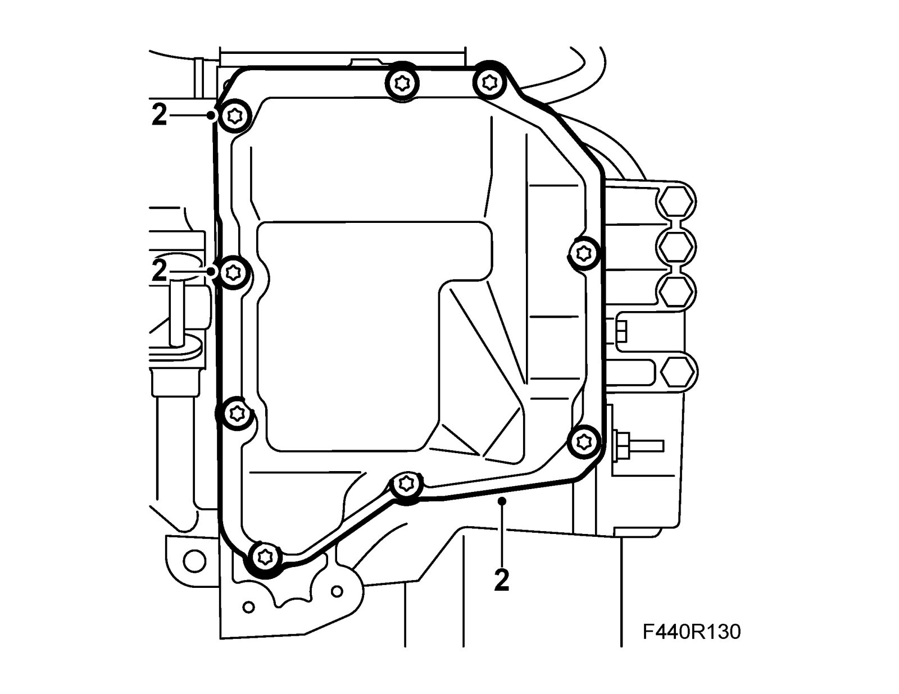
3. Fit the servo pipe clamp to the subframe.
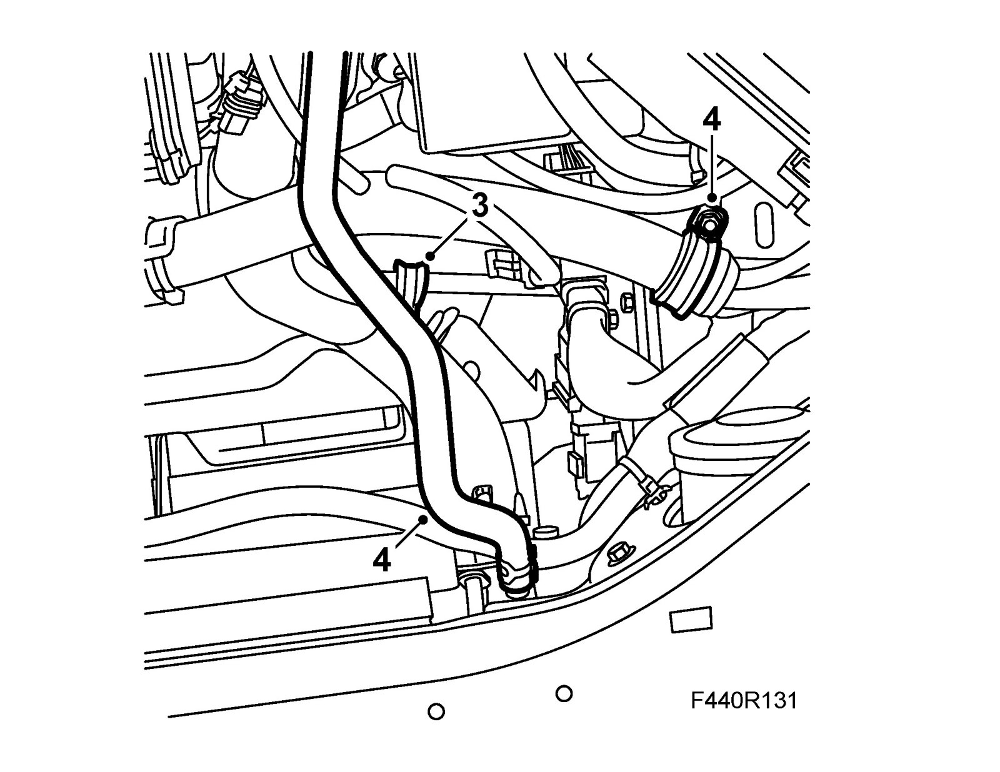
4. Fit the clamp to the engine's wiring harness to the body. Connect the air exhaust hose to the radiator.
5. Fit the lower pipe to the cooler. Press until the pipe snaps into position. Press on the dust protector.
6. Fit the upper pipe in the holder and the oil cooler. Press the pipe until it snaps into position. Press in the dust protector.
7. Fit the charge air pipe into position. Insert the bolt to the charge air pipe upper bracket.
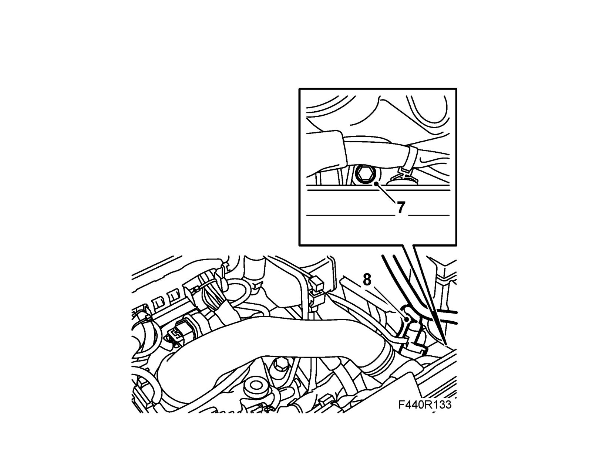
8. Fit the pressure hose connector and vacuum hose.
9. Fit the upper engine cover.
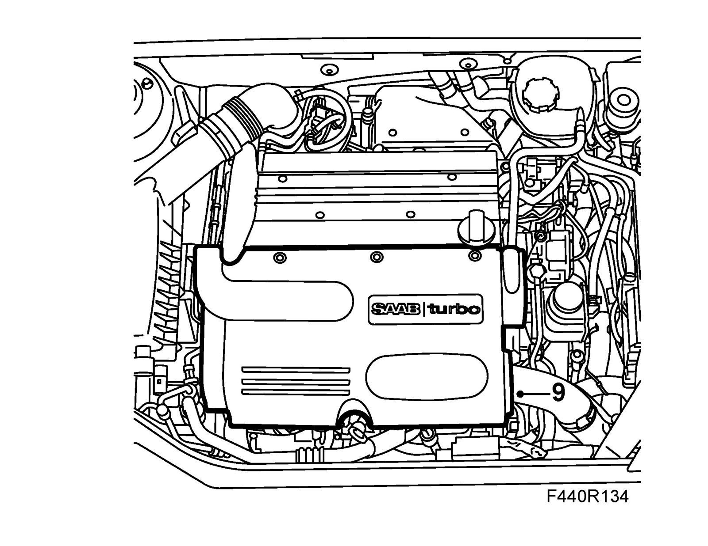
10. Raise the car.
11. Fit the coolant hose to the cooler.
12. Fit the charge air pipe lower bracket.
13. Fit the junction hose on the charge air pipe and tighten the hose clamp.
14. Replace pipe seals in the gearbox. Use 83 90 270 Sliding hammer,87 92 319 Adapter, 3/8" - M10 and 87 92 756 Puller, oil pipe seal, automatic transmission.
Important
Ensure that the surfaces in the gearbox gasket opening are not damaged.
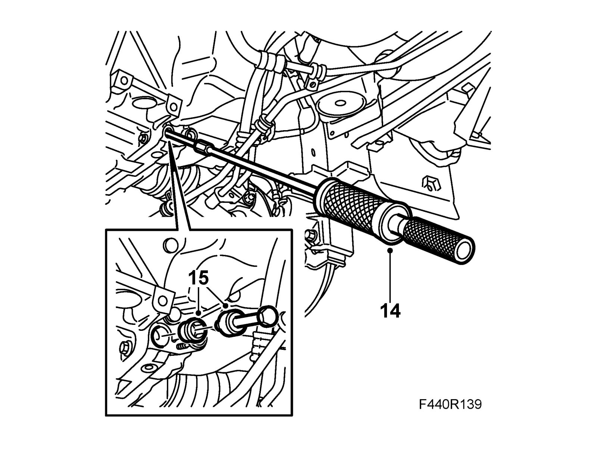
15. Fit new seals lubricated with Vaseline using 87 92 814 Fitting, oil pipe seal, automatic transmission. The pipes will penetrate the seals when fitting.
16. Fit the coolant pipe to the gearbox. The pipes will penetrate the seals. The hoses must be above the power steering pipe.
Tightening torque 6 Nm (4 lbf ft)
17. Lower the car. Fill with oil as follows:
17.a. Remove the dipstick.
17.b. Connect the hose using 87 92 822 Oil filler equipment to the dipstick hole.
17.c. Fill with 3.0 l automatic transmission fluid in accordance with specifications, Weight, volume and grade of fluid.
Important
Fill up with oil through the oil filler hole. Do not remove any other plugs from the top of the gearcase.
18. Tighten the charge air pipe upper retaining bolt.
19. Fit Battery cover, lower section and Battery.
Test pressurize the cooling system see Cooling system, test pressurizing.
20. Fill with coolant and drain the cooling system, see Bleeding the cooling system.
21. Engage position P and start the engine. Fill with oil to the dipstick position "cold".
22. Connect Tech 2. Run the engine until the temperature reaches 80° C in menu "Read values" TCM.
23. Check the fluid level and top up as necessary. See Checking the transmission fluid level. The difference between max and min marks is 0.5 liters. Checking the Transmission Fluid Level
24. Raise the car.
CV: Fit Chassis reinforcement, front subframe, CV.
Fit Spoiler shield, front.
25. Carry out Measures after disconnecting the battery.